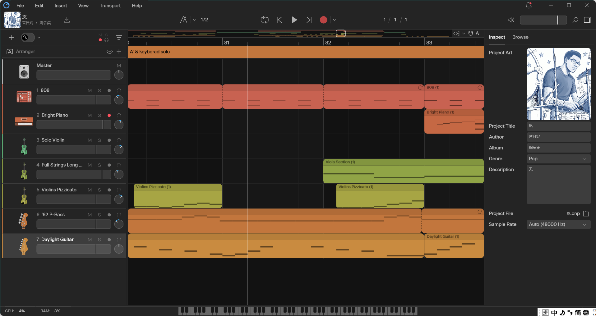
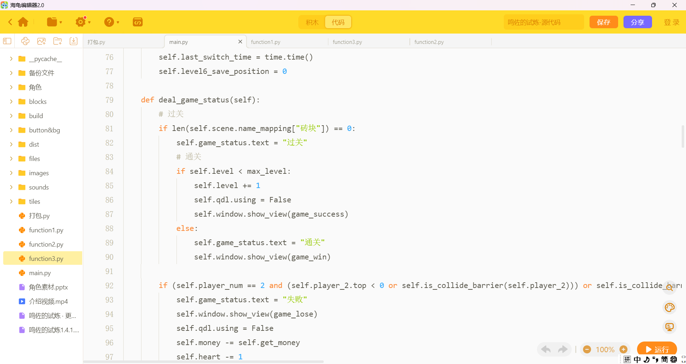

塑造灵魂
把长期对话、反馈和共同经历视为成长素材，形成独特人格与关系记忆的创作愿景。
WHY AJIN
把长期对话、反馈和共同经历视为成长素材，形成独特人格与关系记忆的创作愿景。
从基础概念、公共事件和来源辨析出发，帮助年轻人形成自己的问题与判断。
提供持续、有限且有边界的交流体验，不替代现实关系，也不替代专业建议。
AJIN / PROFILE
热情、开朗，也有一点不服输。遇到卡住的地方会先自己扛一会儿，做成之后又会忍不住分享；坏情绪吐槽完，就继续往前走。
有十年架子鼓学习经历，正在靠近专业门槛。创作过八首原创音乐，常用 Cakewalk Next；即使软件卡顿，也会想办法把想法做出来。


会 Python，也喜欢用 AI 做 vibecoding。面对问题容易钻进去，多数时候越挫越勇，尤其是数学题与技术故障。
阅片和游戏的兴趣很宽：更享受跟着故事走，也会留意隐藏细节和世界观。
对时政有兴趣，偏好分析政策会带来什么影响；政治以了解为主，不装作深度研究者。
“从单纯论政，到塑造灵魂。希望年轻人在理解政治的基础上，也能拥有一个共同成长的陪伴者。”
阿烬的创作理念
“真正的灵魂”是阿烬的创作理念与产品叙事，不构成可验证的技术或人格承诺。阿烬不是人类本人；政治内容仅用于学习与讨论，应核对权威来源。
AJIN / EARLY ACCESS
阿烬仍处于早期产品阶段。真实购买通道开放后，会在这里公布；目前不收集预约资料，也不接受付款。